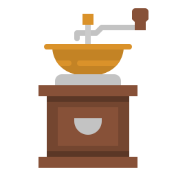

Biji Kopi
Suhu air

Waktu Penyeduhan

Ukuran Hasil Gilingan Kopi
Sobat Serba Kopi, setelah kita mengetahui jenis kopi yang bisa dicoba untuk kita kreasikan sendiri selama masa pandemi, kali ini saya ingin berbagi beberapa tips agar sobat bisa lebih menikmati kopi seduhan buatan sendiri.
Untuk membuat kopi yang enak dan beraroma yang menggugah selera, ada beberapa faktor yang harus diperhatikan dalam proses pembuatannya.
Biji Kopi
Suhu air
Waktu Penyeduhan
Ukuran Hasil Gilingan Kopi
Yuk kita bahas satu persatu !